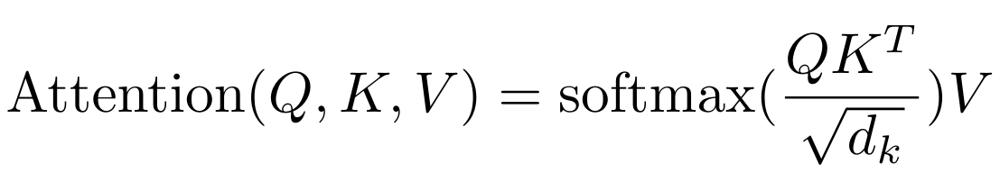

Building a GPT from Scratch#
This notebook explains how to create a language model to predict the next character, based on the transformer architecture (specifically the decoder).
For this, we use a text file moliere.txt containing all the dialogues from Molière’s plays.
This dataset was created from Molière’s complete works available on Gutenberg.org. I cleaned the data to keep only the dialogues.
import torch
import torch.nn as nn
from torch.nn import functional as F
# Pour utiliser le GPU automatiquement si vous en avez un
device = 'cuda' if torch.cuda.is_available() else 'cpu'
Reading the Dataset#
Let’s start by opening and viewing the content of our dataset.
with open('moliere.txt', 'r', encoding='utf-8') as f:
text = f.read()
print("Nombre de caractères dans le dataset : ", len(text))
Nombre de caractères dans le dataset : 1687290
Let’s display the first 250 characters:
print(text[:250])
VALÈRE.
Eh bien, Sabine, quel conseil me donnes-tu?
SABINE.
Vraiment, il y a bien des nouvelles. Mon oncle veut résolûment que ma
cousine épouse Villebrequin, et les affaires sont tellement avancées,
que je crois qu'ils eussent été mariés dès aujo
Let’s use set() to retrieve the unique characters present in the dataset.
chars = sorted(list(set(text)))
vocab_size = len(chars)
print(''.join(chars))
print("Nombre de caractères différents : ", vocab_size)
!'(),-.:;?ABCDEFGHIJKLMNOPQRSTUVXYZabcdefghijlmnopqrstuvxyz«»ÇÈÉÊÏàâæçèéêëìîïòôùûŒœ
Nombre de caractères différents : 85
Creating the Training Dataset#
As in Course 5, we will create a mapping to convert characters into integers. This mapping is a very simple form of tokenization.
Quick Note on Tokenization#
What is Tokenization? Tokenization is the process of converting text into a sequence of integers. Each integer can represent a character, a group of characters, or a word, depending on the method used.
Balance Between Vocabulary and Sequence Length A good tokenizer balances vocabulary size (26 for the alphabet and about 100,000 for French words) with sequence length. A too-small vocabulary increases sequence length (e.g., “Bonjour” becomes 7 tokens if using characters, or 1 token if using words). In practice, extremes are problematic, and we aim for a middle ground.
Popular Tokenizers Tokenizers are essential for the proper functioning of a language model. Their design depends on the method and training data. Among the most widely used are SentencePiece by Google and tiktoken by OpenAI.
# Creation d'un mapping de caractère à entiers et inversement
stoi = { ch:i for i,ch in enumerate(chars) }
itos = { i:ch for i,ch in enumerate(chars) }
encode = lambda s: [stoi[c] for c in s] # encore : prend un string et output une liste d'entiers
decode = lambda l: ''.join([itos[i] for i in l]) # decode: prend une liste d'entiers et output un string
print(encode("Bonjour à tous"))
print(decode(encode("Bonjour à Tous")))
[13, 50, 49, 46, 50, 56, 53, 1, 68, 1, 55, 50, 56, 54]
Bonjour à Tous
We will transform our dataset into sequences of integers and store them as PyTorch tensors.
data = torch.tensor(encode(text), dtype=torch.long)
print(data[:250]) # Les 250 premiers caractères encodé
tensor([33, 12, 23, 64, 29, 16, 8, 0, 0, 16, 44, 1, 38, 45, 41, 49, 6, 1,
30, 37, 38, 45, 49, 41, 6, 1, 52, 56, 41, 47, 1, 39, 50, 49, 54, 41,
45, 47, 1, 48, 41, 1, 40, 50, 49, 49, 41, 54, 7, 55, 56, 11, 0, 0,
30, 12, 13, 20, 25, 16, 8, 0, 0, 33, 53, 37, 45, 48, 41, 49, 55, 6,
1, 45, 47, 1, 59, 1, 37, 1, 38, 45, 41, 49, 1, 40, 41, 54, 1, 49,
50, 56, 57, 41, 47, 47, 41, 54, 8, 1, 24, 50, 49, 1, 50, 49, 39, 47,
41, 1, 57, 41, 56, 55, 1, 53, 73, 54, 50, 47, 82, 48, 41, 49, 55, 1,
52, 56, 41, 1, 48, 37, 0, 39, 50, 56, 54, 45, 49, 41, 1, 73, 51, 50,
56, 54, 41, 1, 33, 45, 47, 47, 41, 38, 53, 41, 52, 56, 45, 49, 6, 1,
41, 55, 1, 47, 41, 54, 1, 37, 42, 42, 37, 45, 53, 41, 54, 1, 54, 50,
49, 55, 1, 55, 41, 47, 47, 41, 48, 41, 49, 55, 1, 37, 57, 37, 49, 39,
73, 41, 54, 6, 0, 52, 56, 41, 1, 46, 41, 1, 39, 53, 50, 45, 54, 1,
52, 56, 3, 45, 47, 54, 1, 41, 56, 54, 54, 41, 49, 55, 1, 73, 55, 73,
1, 48, 37, 53, 45, 73, 54, 1, 40, 72, 54, 1, 37, 56, 46, 50])
We will now split our text into training and validation parts, using a 0.9-0.1 ratio.
n = int(0.9*len(data)) # 90% pour le train et 10% pour la validation
train_data = data[:n]
val_data = data[n:]
For our language model, we will also define a block_size context size.
block_size = 8
train_data[:block_size+1]
tensor([33, 12, 23, 64, 29, 16, 8, 0, 0])
Here, the first 8 characters represent the context, and the 9th is the label. This simple example actually includes several cases, as our model must predict the next character regardless of the context. In this list, we have 8 examples:
x = train_data[:block_size]
y = train_data[1:block_size+1]
for t in range(block_size):
context = x[:t+1]
target = y[t]
print(f"Quand l'entrée est {context.numpy()} le label est : {target}")
Quand l'entrée est [33] le label est : 12
Quand l'entrée est [33 12] le label est : 23
Quand l'entrée est [33 12 23] le label est : 64
Quand l'entrée est [33 12 23 64] le label est : 29
Quand l'entrée est [33 12 23 64 29] le label est : 16
Quand l'entrée est [33 12 23 64 29 16] le label est : 8
Quand l'entrée est [33 12 23 64 29 16 8] le label est : 0
Quand l'entrée est [33 12 23 64 29 16 8 0] le label est : 0
We now know how to create a set of inputs/labels from a single example. Let’s adapt this method for batch processing:
batch_size = 4 # La taille de batch (les séquences calculés en parallèles)
block_size = 8 # La taille de contexte maximale pour une prédiction du modèle
def get_batch(split):
# On genere un batch de données (sur train ou val)
data = train_data if split == 'train' else val_data
#On génére batch_size indice de début de séquence pris au hasard dans le dataset
ix = torch.randint(len(data) - block_size, (batch_size,))
# On stocke dans notre tenseur torch
x = torch.stack([data[i:i+block_size] for i in ix])
y = torch.stack([data[i+1:i+block_size+1] for i in ix])
x, y = x.to(device), y.to(device) # On met les sur le GPU si on en a un
return x, y
xb, yb = get_batch('train')
print('Entrée : ')
print(xb.shape)
print(xb)
print('Labels :')
print(yb.shape)
print(yb)
Entrée :
torch.Size([4, 8])
tensor([[53, 69, 39, 41, 2, 0, 0, 27],
[53, 1, 56, 49, 1, 39, 84, 56],
[54, 11, 0, 0, 24, 12, 30, 14],
[ 1, 51, 72, 53, 41, 8, 0, 0]], device='cuda:0')
Labels :
torch.Size([4, 8])
tensor([[69, 39, 41, 2, 0, 0, 27, 19],
[ 1, 56, 49, 1, 39, 84, 56, 53],
[11, 0, 0, 24, 12, 30, 14, 12],
[51, 72, 53, 41, 8, 0, 0, 33]], device='cuda:0')
Each of these 4 examples includes 8 distinct examples (as explained earlier), totaling 32 examples.
Bigram Model#
In Course 5 on NLP, we saw the bigram, the simplest language model. It predicts the next character from a single context character. Let \(B\) be the batch size, \(T\) the block size, and \(C\) the vocabulary size.
To test its performance on the moliere.txt dataset, let’s quickly implement it in PyTorch:
class BigramLanguageModel(nn.Module):
def __init__(self, vocab_size):
super().__init__()
# Chaque token va directement lire la valeur du prochain à partir d'une look-up table entrainé
self.token_embedding_table = nn.Embedding(vocab_size, vocab_size)
def forward(self, idx, targets=None):
# Taille (B,T)
logits = self.token_embedding_table(idx)
# Taille (B,T,C)
# Pour gérer le cas de la génération (pas de target)
if targets is None:
loss = None
else: # Cas de l'entraînement
B, T, C = logits.shape
logits = logits.view(B*T, C)
targets = targets.view(B*T)
loss = F.cross_entropy(logits, targets)
return logits, loss
def generate(self, idx, max_new_tokens):
# idx est de la taille (B,T) avec T le contexte actuel
for _ in range(max_new_tokens):
# Forward du modèle pour récuperer les prédictions
logits, _ = self(idx)
# On prend uniquement le dernier caractère
logits = logits[:, -1, :] # devient (B, C)
# On applique la softmax pour récuperer les probabilités
probs = F.softmax(logits, dim=-1) # (B, C)
# On sample avec torch.multinomial
idx_next = torch.multinomial(probs, num_samples=1) # devient (B, 1)
# On ajouter l'élément sample à la séquence actuelle
idx = torch.cat((idx, idx_next), dim=1) # (B, T+1)
return idx
m = BigramLanguageModel(vocab_size).to(device)
logits, loss = m(xb, yb)
print(logits.shape)
print(loss)
torch.Size([32, 85])
tensor(4.6802, device='cuda:0', grad_fn=<NllLossBackward0>)
The model is implemented but not trained. If we test it like this, we get disastrous results:
base=torch.zeros((1, 1), dtype=torch.long).to(device) # Le premier élément est un 0 (token de retour à la ligne)
# On génère 100 éléments
print(decode(m.generate(idx = base , max_new_tokens=100)[0].tolist()))
CZjb!DzPGŒR?'hô.ù
cddhhf,séÇqmp.ÉMjôCùÊF:TAFYèL àP;zbVmëtuPipL.ôHtSEé,t:æéÉYÈìïë?VGYxoùyçnï'lpôHà!ô
This is purely random, which makes sense since the model is randomly initialized.
We will now train the model:
optimizer = torch.optim.AdamW(m.parameters(), lr=1e-3)
batch_size = 32
steps=10000
for step in range(steps): # Nombre d'étape d'entraînement (élements traités = steps*batch_size)
# On récupère un batch de données aléatoires
xb, yb = get_batch('train')
# On calcule le loss
logits, loss = m(xb, yb)
optimizer.zero_grad(set_to_none=True)
# Retropropagation
loss.backward()
# Mise à jour des poids du modèle
optimizer.step()
print(loss.item())
/home/aquilae/anaconda3/envs/dev/lib/python3.11/site-packages/tqdm/auto.py:21: TqdmWarning: IProgress not found. Please update jupyter and ipywidgets. See https://ipywidgets.readthedocs.io/en/stable/user_install.html
from .autonotebook import tqdm as notebook_tqdm
2.2493152618408203
Let’s generate from our trained model:
print(decode(m.generate(idx = torch.zeros((1, 1), dtype=torch.long).to(device), max_new_tokens=300)[0].tolist()))
ELASGOXûÏï!
ANDann donde se ns ntrar pous fa àTEn!.
TELITEL'enomouvûûKbeue
SGAvore oue mesontre
t de pou n qur quvabou qude dente je père e em'eni
La d'euhèmpon, j'es en paiqus de rau plenoilà jonont DARLysontausqus es ei voisangur s ve.
DO lar dire tré quseuqu'arme à ai? t pe ne ndome l pa,
We notice an improvement in data structure, and some words seem almost correct. However, the result remains disastrous, which is logical since the bigram is too simple a model.
Self-Attention#
We will now present step-by-step the concept of self-attention, a key element of the transformer architecture.
What Do We Want to Do?#
Let’s start with a simple idea. We have a tensor of size \((B,T,C)\). We want each element \(T\) to be the average of the current element and the previous elements, without considering the following elements. This is the simplest way to give importance to previous elements to predict the current value (this is the idea behind the attention mechanism).
In Python, we can implement this idea as follows:
# Création de notre tenseur random
B,T,C = 4,4,2
x = torch.randn(B,T,C)
x.shape
torch.Size([4, 4, 2])
# Calcul de la moyenne des éléments précédents (incluant l'élément actuel) pour chaque valeur.
xbow = torch.zeros((B,T,C))
for b in range(B):
for t in range(T):
xprev = x[b,:t+1] # (t,C)
xbow[b,t] = torch.mean(xprev, 0)
print(x[0])
print(xbow[0])
tensor([[ 1.5023, -0.5911],
[ 1.0199, -0.2976],
[-1.7581, 0.0969],
[ 0.7444, -0.3360]])
tensor([[ 1.5023, -0.5911],
[ 1.2611, -0.4443],
[ 0.2547, -0.2639],
[ 0.3771, -0.2819]])
We get what we wanted: each element corresponds to the average of the current element with the previous elements.
However, we know that for loops are inefficient for calculations. We would prefer a matrix operation to do the same thing.
Review of Matrix Multiplication#
Matrix Multiplication: \((3 \times 3)\) Matrix by \((3 \times 2)\) Matrix Starting Matrices
Let \(A\) be a \((3 \times 3)\) matrix:
\(A = \begin{pmatrix} a_{11} & a_{12} & a_{13} \\ a_{21} & a_{22} & a_{23} \\ a_{31} & a_{32} & a_{33} \end{pmatrix}\)
and \(B\) be a \((3 \times 2)\) matrix:
\(B = \begin{pmatrix} b_{11} & b_{12} \\ b_{21} & b_{22} \\ b_{31} & b_{32} \end{pmatrix}\)
The matrix multiplication \(C = A \times B\) yields a \((3 \times 2)\) matrix:
\(C = \begin{pmatrix} c_{11} & c_{12} \\ c_{21} & c_{22} \\ c_{31} & c_{32} \end{pmatrix}\)
where each element \(c_{ij}\) is calculated as follows:
\(c_{ij} = \sum_{k=1}^{3} a_{ik} \cdot b_{kj}\)
That is:
\(c_{11} = a_{11}b_{11} + a_{12}b_{21} + a_{13}b_{31}\)
\(c_{12} = a_{11}b_{12} + a_{12}b_{22} + a_{13}b_{32}\)
\(c_{21} = a_{21}b_{11} + a_{22}b_{21} + a_{23}b_{31}\)
\(c_{22} = a_{21}b_{12} + a_{22}b_{22} + a_{23}b_{32}\)
\(c_{31} = a_{31}b_{11} + a_{32}b_{21} + a_{33}b_{31}\)
\(c_{32} = a_{31}b_{12} + a_{32}b_{22} + a_{33}b_{32}\)
Here is a Python example that illustrates this:
a = torch.ones(3, 3)
b = torch.randint(0,10,(3,2)).float()
c = a @ b
print('a=')
print(a)
print('--')
print('b=')
print(b)
print('--')
print('c=')
print(c)
a=
tensor([[1., 1., 1.],
[1., 1., 1.],
[1., 1., 1.]])
--
b=
tensor([[7., 6.],
[5., 0.],
[1., 8.]])
--
c=
tensor([[13., 14.],
[13., 14.],
[13., 14.]])
The Mathematical Trick for Self-Attention#
This is where the magic happens. Instead of a matrix of 1s, we take a lower triangular matrix and perform the calculation again:
a = torch.tril(torch.ones(3, 3))
b = torch.randint(0,10,(3,2)).float()
c = a @ b
print('a=')
print(a)
print('--')
print('b=')
print(b)
print('--')
print('c=')
print(c)
a=
tensor([[1., 0., 0.],
[1., 1., 0.],
[1., 1., 1.]])
--
b=
tensor([[1., 2.],
[1., 4.],
[6., 6.]])
--
c=
tensor([[ 1., 2.],
[ 2., 6.],
[ 8., 12.]])
Each value in the matrix is the sum of the current value and the previous values. That’s almost what we want! We just need to normalize by rows:
a = torch.tril(torch.ones(3, 3))
a = a / torch.sum(a, 1, keepdim=True)
b = torch.randint(0,10,(3,2)).float()
c = a @ b
print('a=')
print(a)
print('--')
print('b=')
print(b)
print('--')
print('c=')
print(c)
a=
tensor([[1.0000, 0.0000, 0.0000],
[0.5000, 0.5000, 0.0000],
[0.3333, 0.3333, 0.3333]])
--
b=
tensor([[1., 2.],
[8., 6.],
[9., 8.]])
--
c=
tensor([[1.0000, 2.0000],
[4.5000, 4.0000],
[6.0000, 5.3333]])
And there you have it! We’ve replaced our double for loop with a simple matrix multiplication and value normalization.
We will now use it to calculate xbow and compare its value with the one calculated using our double loop:
wei = torch.tril(torch.ones(T, T))
wei = wei / wei.sum(1, keepdim=True)
xbow2 = wei @ x # (B, T, T) @ (B, T, C) ----> (B, T, C) fonctionne grâce au broadcasting de pytorch
torch.allclose(xbow, xbow2) # Vérifie que tous les éléments sont identiques
True
Instead of normalization, we can use the softmax function.
tril = torch.tril(torch.ones(T, T))
wei = torch.zeros((T,T))
# On met toutes les valeurs égales à 0 à la valeur -inf
wei = wei.masked_fill(tril == 0, float('-inf'))
print(wei)
tensor([[0., -inf, -inf, -inf],
[0., 0., -inf, -inf],
[0., 0., 0., -inf],
[0., 0., 0., 0.]])
We can now apply the softmax to the matrix and TADAAA:
wei = F.softmax(wei, dim=-1)
print(wei)
xbow3 = wei @ x
torch.allclose(xbow, xbow3)
tensor([[1.0000, 0.0000, 0.0000, 0.0000],
[0.5000, 0.5000, 0.0000, 0.0000],
[0.3333, 0.3333, 0.3333, 0.0000],
[0.2500, 0.2500, 0.2500, 0.2500]])
True
In practice, the version with softmax is used for the self-attention layer.
Self-Attention: The Heart of the Transformer#
Currently, the matrix \(wei\) contains uniform values across each row, providing no real information about the importance of previous information.
This is where the concept of self-attention comes into play. What we want is a trainable matrix \(wei\).
We will create 3 values from our value \(x\):
query: What am I looking for? This value represents what each position in the sequence is trying to find in other positions.
key: What do I contain? This value represents what each position in the sequence contains as information, which could be relevant to other positions.
value: What is my value? This value represents the actual information to extract from each position in the sequence, if deemed relevant.
To extract the query, key, and value values, we use a linear layer that projects the input into a head_size dimension.
To calculate the importance of a previous element in the sequence relative to the current element, we perform the dot product between the query \(Q\) and the key \(K\) (transposed):
\(wei = QK^T\)
To obtain attention weights (sum equal to 1), we apply the softmax and multiply by the value \(V\):
\(Output = \text{softmax}\left(wei\right) \cdot V\)

In Python, we implement it as follows:
Pour calculer l’importance d’un élément précédent de la séquence par rapport à l’élément actuel, on effectue le produit scalaire entre les query \(Q\) et les key \(K\) (transposée) :
\(wei = QK^T\)
Pour obtenir des poids d’attention (somme égale à 1), on applique la softmax et on multiplie par les value \(V\) :
\(Output = \text{softmax}\left(wei\right) \cdot V\)
En Python, on l’implémente de cette manière :
B,T,C = 4,8,32 # batch, time, channels
x = torch.randn(B,T,C)
head_size = 16 # Valeur de head_size (projection de x)
key = nn.Linear(C, head_size, bias=False)
query = nn.Linear(C, head_size, bias=False)
value = nn.Linear(C, head_size, bias=False)
k = key(x) # (B, T, 16)
q = query(x) # (B, T, 16)
wei = q @ k.transpose(-2, -1) # (B, T, 16) @ (B, 16, T) ---> (B, T, T)
tril = torch.tril(torch.ones(T, T))
wei = wei.masked_fill(tril == 0, float('-inf')) # Pour appliquer le softmax, il faut des valeurs -inf
wei = F.softmax(wei, dim=-1)
v = value(x)
out = wei @ v
out.shape
torch.Size([4, 8, 16])
Our matrix \(wei\) is now fully trainable, and it is possible to use this layer to train a neural network.
Notes on the self-attention layer:
Attention is a communication mechanism that can be seen as a graph with connections between nodes (in our case, the end nodes are connected to all previous nodes).
In the attention layer, there is no notion of the position of elements relative to each other. To address this, we will need to add a positional embedding (see next part of the course).
To clarify, there is no interaction along the batch dimension: each element in the batch is processed independently of the others. It’s as if we had batch_size independent graphs.
This attention block is called a decoder block. Its distinctive feature is that each element only communicates with the past (thanks to the lower triangular matrix). However, there are other attention layers (encoder) that allow communication among all elements (for translation, sentiment analysis, or image processing).
We refer to self-attention because the query, key, and value come from the same source. It is possible to have query, key, and value from different sources: in this case, we refer to cross-attention.
If you read the paper Attention is all you need, you will notice that there is a normalization by the square root of the head_size:

This allows for stability of the softmax function, especially during weight initialization.
Let’s now implement a head class that will perform the operations of self-attention. This is simply what we saw earlier in class form.
Implémentons maintenant une classe head qui va effectuer les opérations de la self-attention. C’est simplement ce qu’on a vu précédemment sous forme de classe.
class Head(nn.Module):
""" Couche de self-attention unique """
def __init__(self, head_size,n_embd,dropout=0.2):
super().__init__()
self.key = nn.Linear(n_embd, head_size, bias=False)
self.query = nn.Linear(n_embd, head_size, bias=False)
self.value = nn.Linear(n_embd, head_size, bias=False)
self.register_buffer('tril', torch.tril(torch.ones(block_size, block_size)))
# Ajout de dropout pour la regularization
self.dropout = nn.Dropout(dropout)
def forward(self, x):
B,T,C = x.shape
k = self.key(x) # (B,T,C)
q = self.query(x) # (B,T,C)
# Le * C**-0.5 correspond à la normalisation par la racine de head_size
wei = q @ k.transpose(-2,-1) * C**-0.5 # (B, T, C) @ (B, C, T) -> (B, T, T)
wei = wei.masked_fill(self.tril[:T, :T] == 0, float('-inf')) # (B, T, T)
wei = F.softmax(wei, dim=-1) # (B, T, T)
wei = self.dropout(wei)
v = self.value(x) # (B,T,C)
out = wei @ v # (B, T, T) @ (B, T, C) -> (B, T, C)
return out
Multi-Head Attention#
In the paper Attention is all you need, a variant of self-attention is proposed. This variant is called multi-head attention and simply involves having multiple self-attention layers in parallel. The goal of this layer is to parallelize processing to make it faster on GPUs.

The implementation is quite simple as it involves multiple head layers.
class MultiHeadAttention(nn.Module):
""" Plusieurs couches de self attention en parallèle"""
def __init__(self, num_heads, head_size,n_embd,dropout):
super().__init__()
# Création de num_head couches head de taille head_size
self.heads = nn.ModuleList([Head(head_size) for _ in range(num_heads)])
# Couche pour Linear (voir schema) après concatenation
self.proj = nn.Linear(n_embd, n_embd)
# Dropout si besoin
self.dropout = nn.Dropout(dropout)
def forward(self, x):
out = torch.cat([h(x) for h in self.heads], dim=-1)
out = self.dropout(self.proj(out))
return out
Feed Forward Layer#
Another element of the transformer that we can see in the paper Attention is all you need is the Feed Forward layer, which is simply a small fully connected network.
We implement it in Python as follows:
class FeedFoward(nn.Module):
def __init__(self, n_embd,dropout):
super().__init__()
self.net = nn.Sequential(
# 4*n_embd comme dans le papier
nn.Linear(n_embd, 4 * n_embd),
nn.ReLU(),
nn.Linear(4 * n_embd, n_embd),
nn.Dropout(dropout),
)
def forward(self, x):
return self.net(x)
Transformer Layer#
We now have all the elements to implement our transformer layer, which will use multi-head attention and feed forward. In the main figure of the paper, we also notice that there are residual connections between the input and output of the attention and feed forward layers. These connections facilitate the training of a deep model (more details in the paper Deep Residual Learning for Image Recognition). We will therefore also implement these residual connections. For the layer norm, we will not go into details here, but we can compare its usefulness to a batch norm layer (more details in this blogpost). We will therefore simply use the PyTorch implementation of layer norm.
Here is the Python implementation:
class TransformerBlock(nn.Module):
""" Block transformer"""
def __init__(self, n_embd, n_head):
super().__init__()
head_size = n_embd // n_head
self.sa = MultiHeadAttention(n_head, head_size)
self.ffwd = FeedFoward(n_embd)
self.ln1 = nn.LayerNorm(n_embd)
self.ln2 = nn.LayerNorm(n_embd)
def forward(self, x):
x = x + self.sa(self.ln1(x)) # x+ car c'est une connexion résiduelle
x = x + self.ffwd(self.ln2(x))
return x
Note: We apply the layer norm before the layers (unlike in the paper). This is the only part of the transformer that has been modified since the paper’s publication, and it improves performance.
For clarity, we will create our model and optimize it in the next notebook.